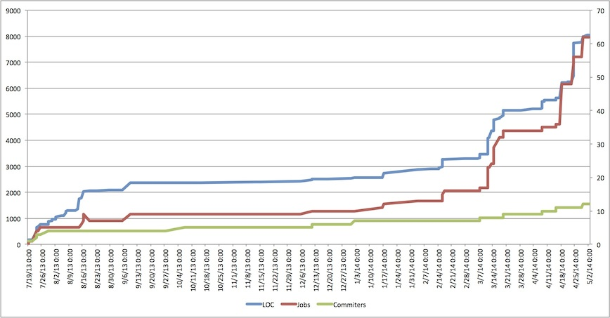

This article was written in collaboration with Hakka Labs (original link)
There has been a lot of debate over Scala lately, including criticisms like this, this, this, and defenses like this and this. Most of the criticisms seem to focus on the language’s complexity, performance, and integration with existing tools and libraries, while some praise its elegant syntax, powerful type system, and good fit for domain-specific languages.
However most of the discussions seem based on experiences building production backend or web systems where there are a lot of other options already. There are mature, battle tested options like Java, Erlang or even PHP, and there are Go, node.js, or Python for those who are more adventurous or prefer agility over performance.
Here I want to argue that there’s a best tool for every job, and Scala shines for data processing and machine learning, for the following reasons:
- good balance between productivity and performance
- integration with big data ecosystem
- functional paradigm
Productivity without sacrificing performance
In the big data & machine learning world where most developers are from Python/R/Matlab background, Scala’s syntax, or the subset needed for the domain, is a lot less intimidating than that of Java or C++. In my experience, basic syntax collections API and lambda (about 20% of the language features) is all that’s needed for a new hire with no prior experience to become productive in processing data. Libraries like Breeze, ScalaLab and BIDMach mimic syntax of popular tools with operator overloading and other syntactic sugar which are otherwise impossible in many mainstream languages. At the same time, performance is usually better than traditional tools like Python or R. As one’s skill develops over time, there’s a clear transition path from imperative to more elegant FP style code while maintaining or even improving performance.
The chart below clearly shows the growth of our main scalding repository over time. We spent a few months experimenting and after doubling the team size in early 2014, the number of jobs and LOC also exploded. Most developers have little Scala or even Java experience and some of the jobs are doing complex machine learning stuff.

Ecosystem
Scala also integrates well with the big data eco-system, which is mostly JVM based. There are frameworks on top of Java libraries like Scalding (Cascading), Summingbird (Scalding and Storm), Scrunch (Crunch), Flink (Java core with Scala API), and ones built from scratch but interface with JVM systems, like Spark and Kafka. The Scala APIs are usually more flexible than say Hadoop streaming with Python/Perl, PySpark or Python/Ruby bolts in Storm, since you have direct access to the underlying API. There are also a wide range of data storage solutions that are built for or work well with JVM like Cassandra, HBase, Voldemort and Datomic.
Functional paradigm
A third benefit is the functional paradigm which fits well within the Map/Reduce and big data model. Batch processing works on top of immutable data, transforms with map and reduce operations, and generates new copies. Real time log streams are essentially lazy streams. Most Scala data frameworks have the notion of some abstract data type that’s extremely consistent with Scala’s collection API. A glance at TypedPipe in Scalding and RDD in Spark, and you’ll see that they all have the same set of methods, e.g. map, flatMap, filter, reduce, fold and groupBy. One could just learn the standard collection and easily pick up one of the libraries. Many libraries also have frequent reference of category theory, more specifically properties of semigroup, monoid, and group to guarantee the correctness of distributed operations. Equipped such knowledge it’ll be a lot easier to understand techniques like map-side reduce.
With these benefits I would say Scala is here to stay in the big data world and there are few contenders close in the competition.
Comments
comments powered by Disqus